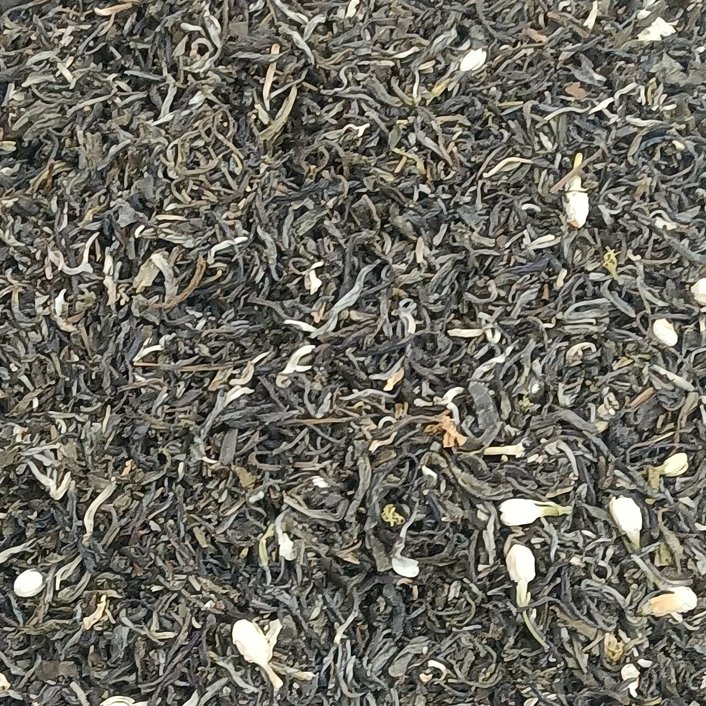

Featured links
The newest piece in this section, sorted by publication date.

Latest article
Why Phoenix Dancong is best understood through Duck Shit Aroma
Latest article
Why Bama Tea became a mainstream gateway to Chinese tea

Latest article
Jasmine tea: from Fuzhou scenting craft to Hengzhou flowers, and why this Chinese flower tea is really about process and place

Most popular
Longjing: spring in Hangzhou, pan-fired craft, and the local life inside one cup
All articles
Browse every article in this section in reverse chronological order.
Why Phoenix Dancong is best understood through Duck Shit Aroma
Why Bama Tea became a mainstream gateway to Chinese tea
Jasmine tea: from Fuzhou scenting craft to Hengzhou flowers, and why this Chinese flower tea is really about process and place
Pu-erh: Yunnan, raw and ripe tea, storage, and the meaning of time
Oolong tea: shape, craft, and the widest expressive range in Chinese tea
Longjing: spring in Hangzhou, pan-fired craft, and the local life inside one cup
Chinese black tea: from Lapsang Souchong to Jin Jun Mei, and from Wuyi to Britain